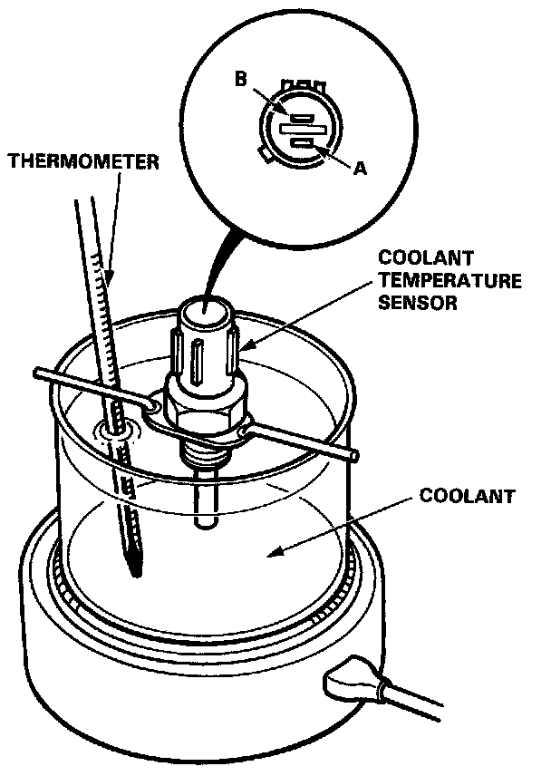
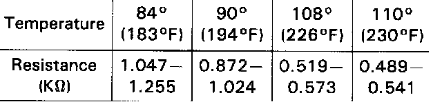

Temperature Sensor (Gauge): Testing and Inspection

Coolant Temperature Sensor Test
CAUTION: Do not remove the radiator cap when engine is hot. The coolant is under pressure and may blow out and scald you. Open the cap slowly when the engine is cool.
NOTE: Bleed air out of the cooling system after installing the coolant temperature sensor.
CAUTION: Failure to comply with the bleeding procedure could cause imperfect bleeding, which may result in severe engine damage.
1. Remove the coolant temperature sensor from the thermostat housing.
2. Suspend the coolant temperature sensor in a container of coolant as shown.
3. Heat the coolant and check coolant temperature with a thermometer (see table below).
4. Measure the resistance between the A and B terminals according to the table.

5. If unable to obtain the above readings, replace the temperature switch.